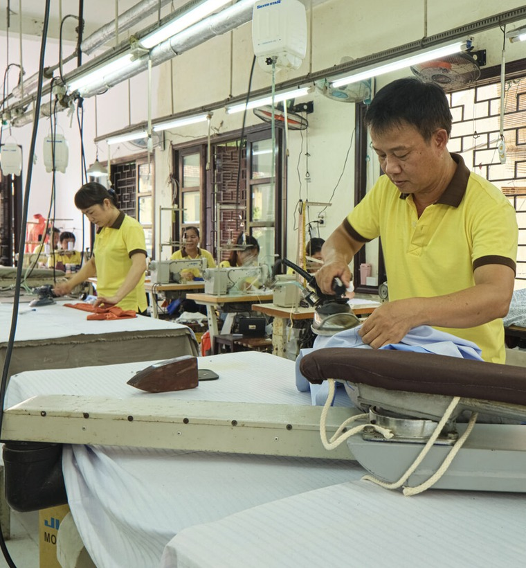

Pautas na Ásia
Vídeos
Fotos
Textos
janeiro e fevereiro
PROJETO SUDESTE ASIÁTICO 2027 · TAILÂNDIA · VIETNÃ
PROPOSTA DE KIKO COSTATO
PAUTA 01 · TAILÂNDIA
O fenômeno das séries de amor entre mulheres
Final feliz, romance construído com calma, mulheres no centro da história. As séries tailandesas de Girls Love encontraram um jeito de contar o amor entre mulheres em que o público feminino se reconhece.
Durante décadas, o amor entre mulheres apareceu na tela como trama secundária, tragédia ou fetiche. As séries tailandesas de Girls Love fazem o contrário. As duas protagonistas são o centro da história. O romance é construído devagar: o olhar, a aproximação, a primeira conversa difícil. A câmera acompanha o afeto, não o corpo. E o final é feliz. Fãs ouvidas pela BBC contam que saber que o casal termina junto é o que conforta, e que se sentem validadas.
Foi assim com “GAP The Series”, de 2022, a primeira do país com um casal de mulheres como protagonistas: mais de 800 milhões de visualizações no YouTube em um ano. O que veio depois é uma indústria: 21 séries e 51 casais até o fim de 2024, muitas adaptadas de romances de sucesso. O governo percebeu, e em 2025 levou atrizes e atores a São Paulo para encontrar as fãs brasileiras. A reportagem vai atrás dessa fórmula: como elas contam, por que encanta, e por que tantas mulheres se veem ali.
Cena de “GAP The Series”, 2022.
PAUTA 01 · TAILÂNDIA · OS NÚMEROS
O tamanho do fenômeno
4,9 bi
de baht, cerca de R$ 790 milhões: o setor de séries BL e GL em 2025, crescendo 17% ao ano
2,46 bi
de baht, cerca de R$ 400 milhões: receita da GMMTV, a maior produtora, em 2024
5,57 bi
de baht, cerca de R$ 900 milhões, em negócios nas ações de exportação do governo em 2025
1.832
casais do mesmo sexo registraram casamento no primeiro dia da lei, 23 de janeiro de 2025
Fatia das séries BL e GL na produção de entretenimento tailandesa
“GAP The Series” no YouTube, em visualizações
Quem produz o Girls Love da Ásia, 2024
PAUTA 01 · TAILÂNDIA · ENTREGAS
Possíveis entrevistados, locações e contatos
POSSÍVEIS ENTREVISTADOS
Atrizes. Freen Sarocha e Becky Armstrong (GAP), Lingling e Orm (The Secret of Us), Milk e Love (23.5).
Indústria. Noppharnach Chaiyahwimhon, diretor da GMMTV; Saint Suppapong, produtor de GAP.
No Brasil. Luiza Z., que viajou à Tailândia guiada pelas séries; a youtuber Ana Bagunceira.
Academia. Ligia Prezia Lemos (PUC-RS) e Eva Cheuk-Yin Li (King’s College London).
LOCAÇÕES
Siam, Bangkok. Fan meetings e o Siam Paragon, palco dos casamentos de 23 de janeiro.
GMM Grammy Place. A sede da GMMTV, onde as séries são feitas.
Ministério do Comércio. Onde o GL entrou na política de exportação.
São Paulo. O fandom brasileiro, ponto de partida do filme.
CONTATOS
GMMTV. Assessoria da produtora, para acesso a elenco e set.
Bangkok Pride. Ann “Waaddao” Chumaporn, fundadora, BBC 100 Women 2024.
IdolFactory. Produtora de GAP, para arquivo e bastidores.
Portais do fandom. No Mundinho do GL e Boys Love Hub.
ENTREGAS
Texto. Reportagem especial com entrevistas, para impresso e site.
Vídeo, 5 a 7 min. Mini-doc em três atos: o delírio, a fábrica, o espelho.
Redes. Fotos e textos mínimos que levam à matéria e ao filme.
Prazo. Cinco semanas, da apuração ao acabamento.
VIETNÃ · PAUTA 02
As mulheres da Guerra do Vietnã
As histórias das mulheres que viveram a guerra e de suas descendentes, contadas por elas e pelas organizações que as representam.
PAUTA 02 · VIETNÃ
A guerra que elas também lutaram
Pelo menos 1,5 milhão de mulheres serviram nas forças do Vietnã do Norte. Mais de cinquenta anos depois do fim da guerra, elas, suas filhas e suas netas ainda guardam essa história.
A Guerra do Vietnã costuma ser lembrada como uma guerra de homens. Pelo menos 1,5 milhão de mulheres serviram nas forças do Norte, e elas chegaram a 70% dos jovens voluntários. No Sul, o chamado Exército de Cabelos Longos reuniu, segundo estimativas, um milhão de mulheres como combatentes, mensageiras, espiãs e enfermeiras. Na Trilha Ho Chi Minh, garotas de 17 a 24 anos tapavam crateras de bomba durante o dia para os caminhões passarem à noite.
O país reconhece ainda outra frente, a das mães: quase 140 mil mulheres receberam o título de Mãe Heroica do Vietnã, dado a quem perdeu filhos ou marido na guerra. E há uma herança que não terminou. O Vietnã estima 4,8 milhões de pessoas expostas ao agente laranja e mais de 3 milhões de vítimas, hoje na quarta geração; os Estados Unidos contestam esses números. A reportagem vai ouvir as veteranas, as filhas e as netas, e as organizações que guardam essa memória.
Jovem vietnamita em imagem de arquivo do período da guerra.
PAUTA 02 · VIETNÃ · OS NÚMEROS
O tamanho dessa história
1,5 mi
de mulheres, no mínimo, serviram nas forças do Vietnã do Norte durante a guerra
138 mil
jovens voluntários na Trilha Ho Chi Minh, a maioria mulheres de 17 a 24 anos
139 mil
Mães Heroicas do Vietnã, título dado a quem perdeu filhos ou marido, até 2020
4,8 mi
de vietnamitas expostos ao agente laranja; mais de 3 milhões de vítimas
Províncias com mais Mães Heroicas
Quang Nam
15.261
Ben Tre
6.905
Quang Ngai
6.802
Hanói
6.723
Vítimas do agente laranja nascidas depois da guerra, por geração
Os números de vítimas do agente laranja são do governo e de entidades vietnamitas, com contagem parcial por geração. O governo dos Estados Unidos contesta esses totais.
PAUTA 02 · VIETNÃ · ENTREGAS
Possíveis entrevistados, locações e contatos
POSSÍVEIS ENTREVISTADAS
As veteranas. Mulheres que serviram na Trilha Ho Chi Minh e no Exército de Cabelos Longos.
As Mães Heroicas. Entre as que ainda vivem, em Quang Nam e Ben Tre.
As filhas e netas. Três gerações da mesma família, incluindo as atingidas pelo agente laranja.
As pesquisadoras. Historiadoras dos museus que organizam esses acervos.
LOCAÇÕES
Hanói. O Museu das Mulheres do Vietnã e a sede da União das Mulheres.
Cidade de Ho Chi Minh. O Museu das Mulheres do Sul e o Museu dos Vestígios da Guerra.
Quang Nam. A província com mais Mães Heroicas do país.
Quang Tri. Os túneis de Vinh Moc, onde uma aldeia inteira viveu embaixo da terra.
CONTATOS
Museu das Mulheres do Vietnã. Mantido pela União das Mulheres, com acervo reunido desde os anos 1970.
Museu das Mulheres do Sul. Guarda diários e objetos das Mães Heroicas.
União das Mulheres do Vietnã. A entidade que organiza a memória das veteranas.
VAVA. Representa as vítimas do agente laranja e suas famílias.
Vietnam Friendship Village. Cuidado e formação para vítimas, em Hanói.
Embaixada do Vietnã em Brasília. Caminho para pedir credenciais e contatos oficiais.
ENTREGAS
Texto. Reportagem com as vozes de três gerações de mulheres.
Vídeo, 5 a 7 min. Mini-doc em preto e branco, com retratos e arquivo.
Fotos. Ensaio de retratos para a edição impressa.
Redes. Retratos com frases curtas das entrevistadas.
VIETNÃ · PAUTA 03
Os alfaiates
Em Hoi An, a capital da alfaiataria do Vietnã, uma roupa sob medida fica pronta em um a três dias.

PAUTA 03 · VIETNÃ
Hoi An: a tapeçaria do tempo
O assoreamento do rio Thu Bồn tirou Hoi An da rota do comércio no século 19 e preservou a cidade. Dos navios ficaram os tecidos, e deles nasceu a alfaiataria feita em um a três dias.
Entre os séculos 16 e 18, Hoi An, então Faifo, era um dos portos mais movimentados da Rota Marítima da Seda. Mercadores da China, do Japão, de Portugal e da Holanda passavam semanas ancorados à espera da monção, e os artesãos locais, já tecelões de seda, passaram a costurar para eles. No século 19 o rio Thu Bồn assoreou e o comércio foi para Da Nang, mas o ofício seguiu dentro das famílias, e 844 edifícios históricos ficaram preservados. Voltou a crescer com o título da Unesco, em 1999: de 202 mil visitantes naquele ano para 4,43 milhões em 2024.
Hoje uma roupa sob medida leva de 24 a 72 horas e de uma a três provas. Uma camisa sai a partir de 15 dólares, cerca de R$ 85; um terno de ponta passa de 700 dólares, cerca de R$ 4 mil. Muitos ateliês estão na segunda ou terceira geração: jovens que mantêm o ritual anual aos ancestrais da alfaiataria, mostram as provas no TikTok e usam escaneamento 3D. A reportagem acompanha uma roupa do tecido à última prova e ouve as duas pontas: quem defende o ofício como moda lenta e quem vê ali uma armadilha para turistas. Desde 2019, Hoi An está na lista vietnamita de zonas onde o turismo ameaça o patrimônio.
A escolha do tecido no balcão de um ateliê de Hoi An.
PAUTA 03 · VIETNÃ · OS NÚMEROS
Os ateliês, os prazos, os preços
4,43 mi
de visitantes em 2024, contra 202 mil em 1999, ano do título da Unesco
61
ateliês já mapeados pelo projeto, com endereço, preço e prazo
24–72 h
do tecido à peça pronta, com uma a três provas e sinal de 50% no pedido
R$ 76
por uma camisa, 15 dólares; um terno de tecido importado passa de 700 dólares, cerca de R$ 3,5 mil
Prazo de entrega declarado, nos ateliês do levantamento
Visitantes em Hoi An
2024
4,43 mi
1999
202 mil
Conversão a R$ 5,05 por dólar, cotação de novembro de 2026. Dos 61 ateliês do levantamento, 42 declaram prazo. Visitantes: Vietnam Tourism. Ateliês, prazos e preços vêm do levantamento próprio do projeto.
PAUTA 03 · VIETNÃ · ENTREGAS
Possíveis entrevistados, locações e contatos
POSSÍVEIS ENTREVISTADAS
As donas. Linda, da Nathan Tailors, oficina de família desde 1999; Le Thi Chan, a Juli, que fundou a Be Li em 2009; as irmãs da Se Se Tailor.
As casas antigas. Thu Thuy Silk, de 1989; Yaly Couture, 30 anos; Len Silk, na sexta geração.
A nova geração. Jovens alfaiates dos ateliês abertos em Cam Nam em 2023, que divulgam o trabalho sob a hashtag #HoiAnTailor.
As bancas. A senhora An, banca 90 do mercado de tecidos, e Linh, que costura na própria banca.
LOCAÇÕES
Cidade antiga. A Ponte Coberta Japonesa, a casa Tấn Ký e as ruas dos ateliês.
Mercado de tecidos. Rua Tran Phu: dezenas de bancas que vendem e costuram.
Vila da Seda e Mã Châu. A seda local, do bicho-da-seda ao tear.
Cam Nam. O bairro onde abriram os ateliês novos.
CONTATOS
Levantamento próprio. 61 ateliês já mapeados, com endereço, preço e prazo.
Centro de gestão do patrimônio de Hoi An. Autorizações para filmar na cidade antiga.
Vila da Seda de Hoi An. Visita guiada ao tear e ao bicho-da-seda.
Embaixada do Vietnã em Brasília. Caminho para pedir credenciais.
ENTREGAS
Texto. Reportagem leve, de serviço e de personagem.
Vídeo, 5 a 7 min. Uma roupa feita em 24 horas, do tecido à prova.
Fotos. As mãos, os tecidos e as provas, para o impresso.
Redes. Antes e depois, tecidos e detalhes de costura.